ECG Blog #416 — Nhịp tim và điện tâm đồ có liên quan với nhau không?
Hãy hình dung thông tin duy nhất được cung cấp cho điện tâm đồ ở Hình 1 — là nó được ghi ở một người đàn ông 60 tuổi bị CP mới xuất hiện (đau ngực — Chest Pain).
CÂU HỎI:
- Với bệnh sử ngắn gọn này — BẠN sẽ đọc điện tâm đồ ở Hình 1 như thế nào?
- Nhịp tim có liên quan đến điện tâm đồ 12 chuyển đạo không?

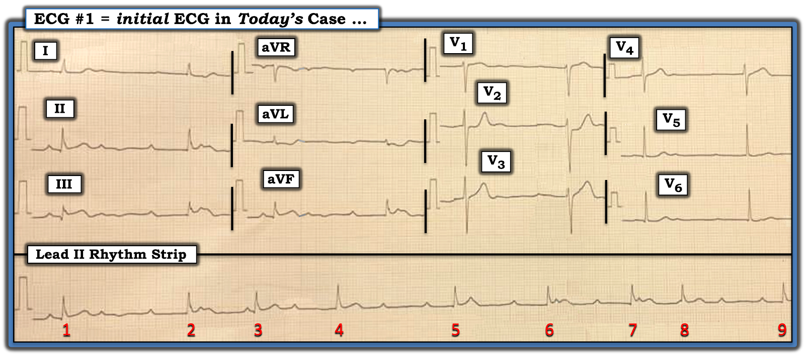
SUY NGHĨ CỦA TÔI về điện tâm đồ ở Hình 1:
Mục tiêu của các bác sĩ lâm sàng là đọc cả hai phần của bản ghi ở Hình 1 ( = nhịp tim và điện tâm đồ 12 chuyển đạo) — theo cách tối ưu và tiết kiệm thời gian.
- Để đạt mục tiêu trên — việc đọc 2 Phần này của bản ghi hôm nay không nhất thiết phải hoàn chỉnh ngay ở lần đánh giá ban đầu.
- Thay vào đó — trong một ca cấp tính như ca hôm nay (tức là, bệnh nhân đến khám vì CP mới xuất hiện) — tôi thích dành không quá 5-10 giây để nhìn nhịp (để bảo đảm rằng nhịp này không cần điều trị ngay).
- Sau đó tôi chuyển sự chú ý sang điện tâm đồ 12 chuyển đạo để đánh giá xem có khả năng đang có OMI cấp hay không (nhằm nhanh chóng xác định CÓ cần thông tim sớm và có thể PCI hay không).
- ĐIỂM THEN CHỐT (PEARL) #1: Dù tôi thích giới hạn thời gian đánh giá nhịp phức tạp hôm nay ở mức không quá 5-10 giây — tôi vẫn thích dùng cách tiếp cận hệ thống Ps, Qs, 3R (Xem ECG Blog #185) vì: i) Chỉ cần luyện tập một chút — bạn sẽ thấy cách tiếp cận hệ thống này thực ra đẩy nhanh thêm việc đánh giá của bạn, chứ không làm chậm lại; và, ii) Độ chính xác khi đọc của bạn sẽ cải thiện (đến mức dù bạn không đi tới được chẩn đoán xác định — bạn cũng sẽ thu hẹp các khả năng chẩn đoán).
Đánh giá Nhanh của tôi về nhịp hôm nay:
Theo cách tiếp cận Ps, Qs, 3R:
- Nhịp ở Hình 1 rõ ràng không đều (Regular). Dù vậy — đây là nhịp trên thất (vì phức bộ QRS không rộng). Tần số (Rate) nhìn chung chậm, có chỗ giảm xuống dưới 50/phút. Có sóng P — nhưng khoảng PR dường như thay đổi liên tục (tức là, điều này đặt ra câu hỏi liệu có sóng P nào liên quan (Related) với các phức bộ QRS kế cận hay không?).
- XIN NHẤN MẠNH: Việc đánh giá có trọng tâm ở trên theo cách tiếp cận Ps,Qs,3R không nên mất quá 10-20 giây. Đây là tất cả thông tin bạn cần cho một Đánh giá Nhanh ban đầu về nhịp tim.
- LƯU Ý: Dù tần số của nhịp khá chậm ở một số chỗ — NẾU bệnh nhân ổn định huyết động, thì không cần điều trị cấp cứu (tức là, Không cần phải đọc nhịp chính xác hơn ngay lập tức). Điều này có nghĩa là giờ bạn có thể chuyển sự chú ý sang điện tâm đồ 12 chuyển đạo để xác định xem bệnh nhân CP mới xuất hiện này CÓ cần (hay không cần) thông tim sớm ngay lập tức.
ĐIỂM THEN CHỐT (PEARL) #2:
Khi nhìn nhịp tim trước tiên — ban đầu tôi không chắc CÓ phải đang có một dạng blốc AV độ 2 nào đó hay không. Dù vậy — tôi ngay lập tức biết rằng nhịp hôm nay khó là blốc AV hoàn toàn vì đáp ứng thất quá không đều!
- Phần lớn các trường hợp khi có blốc AV hoàn toàn (độ 3) — đáp ứng thất sẽ đều (hoặc ít nhất là gần như đều). Đó là vì NẾU không sóng P nào dẫn truyền được xuống thất (như trường hợp có blốc AV hoàn toàn) — một ổ thoát đều (hoặc từ nút AV hoặc từ thất) thường sẽ tiếp quản nhịp. Mức độ không đều rõ rệt thấy ở Hình 1 đơn giản là quá thay đổi để có thể xuất phát từ một ổ thoát hoạt động bình thường.
====================================
Chuyển sự chú ý sang Điện tâm đồ 12 Chuyển đạo:
Đến lúc này trong quá trình đọc — Chúng ta cần tập trung vào điện tâm đồ 12 chuyển đạo. Tôi đã tô nổi ở Hình 2 các chuyển đạo MẤU CHỐT cần thu hút sự chú ý của bạn. Theo trình tự, trong 20-30 giây tiếp theo — mắt bạn cần tập trung vào các phức bộ trong hình chữ nhật ĐỎ — rồi XANH nhạt — rồi XANH đậm.
- Ở bệnh nhân CP mới xuất hiện này — Giờ BẠN biết được gì?
- Cần can thiệp gì?
- Điều này cho chúng ta biết gì về căn nguyên có khả năng của nhịp?

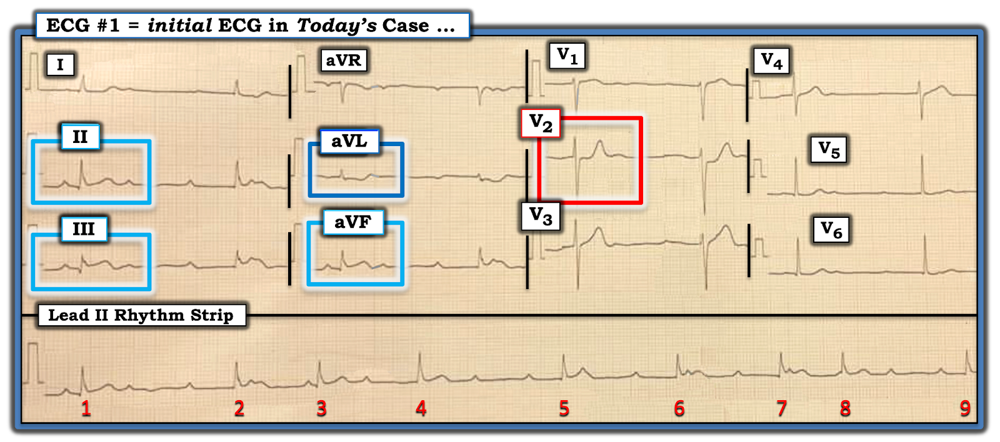
Đọc điện tâm đồ 12 chuyển đạo của ca hôm nay:
Với bệnh sử CP mới xuất hiện — việc đánh giá điện tâm đồ 12 chuyển đạo ở Hình 2 CỦA BẠN cần ghi nhận được những điểm sau:
- Trong hình chữ nhật ĐỎ : — Đoạn ST dẹt "dạng bậc thềm" (shelf-like) gập góc đột ngột thành một sóng T dương nổi bật ở chuyển đạo V2 ngay lập tức cho phép chẩn đoán OMI thành sau cấp (trong đó chữ “O” trong “OMI” chỉ một nhồi máu cơ tim cấp do tắc (Occlusion) động mạch vành cấp).
- Điểm lâm sàng MẤU CHỐT: Bình thường, đoạn ST hơi chênh lên ở chuyển đạo V2 và V3 phải dốc lên thoai thoải — vì vậy "mắt" chúng ta phải ngay lập tức nhận ra hình dạng bất thường của phức bộ trong hình chữ nhật ĐỎ (điều này cho chúng ta biết là “OMI thành sau” cho đến khi chứng minh được điều ngược lại).
- Trong 3 hình chữ nhật XANH nhạt: — Do có chung nguồn cấp máu, OMI thành sau thường đi kèm OMI thành dưới. Vì vậy — sự xác nhận rằng hình dạng bất thường của sóng ST-T ở chuyển đạo V2 thực sự là hậu quả của OMI thành sau cấp sẽ có được NẾU các chuyển đạo chi cho phép chẩn đoán nhồi máu cơ tim thành dưới cấp. Hãy lưu ý trong mỗi hình chữ nhật XANH nhạt — có sóng Q nhỏ-nhưng-thật với ST chênh lên kín đáo-nhưng-thật. Đặc biệt khi biên độ QRS khiêm tốn — sóng ST-T ở chuyển đạo III rõ ràng trông tối cấp (tức là, "đầy" ở đỉnh và rộng ở đáy một cách không tương xứng so với mức đáng có — kèm phần cuối sóng T âm kín đáo).
- Trong hình chữ nhật XANH đậm: — Hình ảnh sóng ST-T đối xứng soi gương ngược chiều "kỳ diệu" ở chuyển đạo aVL so với chuyển đạo III xoá bỏ mọi nghi ngờ. Với biên độ QRS rất nhỏ ở chuyển đạo aVL — diện tích không tương xứng trong đoạn ST chênh xuống ở chuyển đạo này là một thay đổi soi gương (reciprocal) giúp xác nhận OMI thành dưới cấp (Lưu ý phần cuối sóng T dương ở chuyển đạo aVL — cũng phản ánh hình ảnh soi gương của phần cuối sóng T âm kín đáo ở chuyển đạo III).
- ĐIỀU CỐT LÕI: Trong chưa đầy một phút — Chúng ta có thể khẳng định rằng ở bệnh nhân hôm nay, người đến khám vì CP mới xuất hiện — điện tâm đồ ở Hình 2 cho phép chẩn đoán, cho đến khi chứng minh được điều ngược lại, OMI dưới-sau cấp (nhiều khả năng nhất do tắc RCA cấp). Thông tim sớm để PCI rõ ràng là có chỉ định!
- ĐIỂM THEN CHỐT (PEARL) #3: Một khái niệm lâm sàng nâng cao — là nhồi máu cơ tim thành dưới cấp thường đi kèm blốc AV độ 2 kiểu Wenckebach (Mobitz I). Nhận biết mối liên quan thường gặp này khiến tôi lập tức nghi ngờ rằng một dạng dẫn truyền Wenckebach nào đó có lẽ đang hoạt động trong nhịp hôm nay — dù phải thừa nhận là tôi không thấy bất kỳ kiểu nhịp theo nhóm (group beating) nhất quán nào, hay bất kỳ khoảng PR lặp lại nào vốn thường gợi ý cho tôi về các rối loạn dẫn truyền Mobitz I.
==============================
Xem kỹ hơn Nhịp của Ca hôm nay:
Xin nhấn mạnh: "Điều cần nhớ" quan trọng của ca hôm nay — là ở bệnh nhân CP mới xuất hiện này — điện tâm đồ ở Hình 2 cho phép chẩn đoán OMI dưới-sau cấp (nhiều khả năng nhất do tắc RCA cấp) — và cần thông tim sớm để PCI.
- Dù căn nguyên cụ thể của rối loạn nhịp hôm nay là gì, thì “tin tốt” là — nhịp này nhiều khả năng nhất sẽ cải thiện khi tái tưới máu động mạch "thủ phạm".
- Dù vậy — tôi thấy rối loạn nhịp hôm nay rất thú vị, và đáng được phân tích sâu hơn. (LƯU Ý: Lời giải bằng giản đồ bậc thang mà tôi đề xuất dưới đây cho nhịp hôm nay là phức tạp và rõ ràng Vượt ra ngoài phần cốt lõi. Dù vậy — tôi tin rằng phần mô tả và cách dựng từng bước giản đồ bậc thang dưới đây của tôi sẽ đem lại hiểu biết sâu sắc cho người hành nghề ở mọi trình độ.).
- Xin nhắc lại — học vẽ giản đồ bậc thang quả thật cần thời gian và không bắt buộc để trở nên giàu kinh nghiệm và thành thạo trong đọc rối loạn nhịp trên lâm sàng. Nhưng — học cách đọc giản đồ bậc thang đã được vẽ sẵn thì DỄ — và mọi bác sĩ lâm sàng (bất kể trình độ kinh nghiệm) đều có thể nhanh chóng bắt đầu hưởng lợi từ hiểu biết mà minh họa bằng giản đồ bậc thang đem lại.
- Với bạn đọc quan tâm học hoặc cách đọc và/hoặc cách vẽ giản đồ bậc thang — tôi đã thêm ĐƯỜNG LINK tới hơn 100 giản đồ bậc thang (nhiều giản đồ có minh họa từng bước) tại trang này = https://tinyurl.com/KG-Laddergrams —
==============================
Cách tiến hành để “Giải” rối loạn nhịp hôm nay:
================================
ĐIỂM THEN CHỐT (PEARL) #4: Đến lúc này — Hãy đánh dấu các sóng P!
- Bước đơn giản là đánh dấu sóng P giúp ích rất nhiều để hình dung các mối liên hệ có thể có giữa hoạt động nhĩ và các phức bộ QRS kế cận.
- Dùng compa đo (calipers) giúp quá trình này dễ hơn. Tôi chỉ việc đặt compa ở một khoảng P-P được xác định bằng cách chọn khoảng cách giữa 2 sóng P mà tôi nhận ra chắc chắn. Vì loạn nhịp xoang "theo pha thất" (ventriculophasic) rất hay gặp trong blốc AV độ 2 và độ 3 — Chúng ta cần tính đến thực tế là khoảng P-P giữa các sóng P xoang thường sẽ thay đổi nhẹ.
Hãy XEM Hình 3 — trong đó tôi đã đánh dấu các sóng P xoang bằng mũi tên ĐỎ trên suốt dải nhịp.
- Có khoảng PR nào bằng nhau không?
- Bạn có nghĩ phức bộ QRS nào ở Hình 3 đang được dẫn truyền không? Nếu có — Làm sao bạn biết được rằng sóng P đang dẫn truyền các phức bộ QRS này?

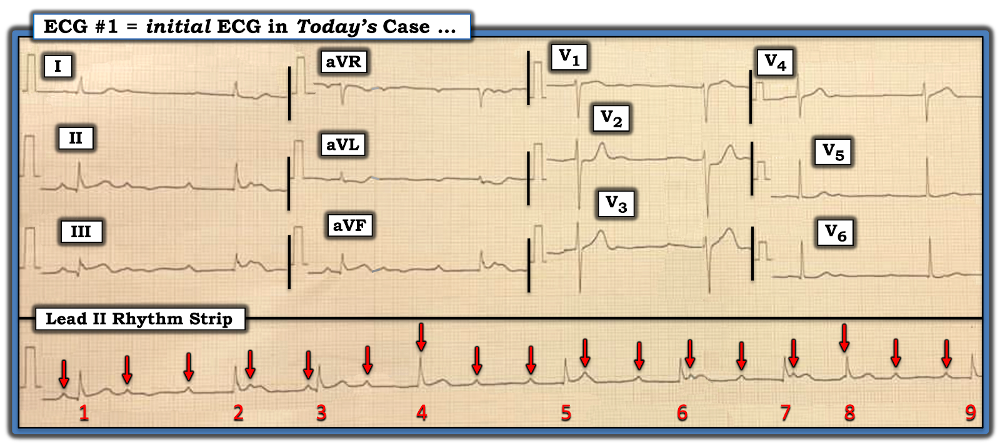
SUY NGHĨ CỦA TÔI về Hình 3:
- Mũi tên ĐỎ làm nổi bật một nhịp nhĩ khá đều (với khoảng P-P thay đổi nhẹ do loạn nhịp xoang theo pha thất).
- Như đã nêu ở ĐIỂM THEN CHỐT #2 — nhịp hôm nay khó là blốc AV hoàn toàn. Đó là vì nhịp thất không đều rõ rệt (trong khi blốc AV hoàn toàn thường biểu hiện một nhịp thất đều, hoặc ít nhất là khá đều).
- Phần lớn các khoảng R-R trên dải nhịp dài chuyển đạo II chứa 2 sóng P giữa các phức bộ QRS — nghĩa là ít nhất 1 trong các sóng P này không được dẫn truyền. Điều này gợi ý mạnh rằng nhịp không đều ở Hình 3 là một dạng blốc AV độ 2 nào đó (tức là, hoặc Mobitz I [ = Wenckebach AV] hoặc Mobitz II).
- NẾU điều này đúng — thì việc phức bộ QRS hẹp ở mọi nơi — khoảng PR không cố định — và, điện tâm đồ 12 chuyển đạo cho phép chẩn đoán OMI dưới-sau cấp — gợi ý một dạng nào đó của Wenckebach AV độ 2 đang hoạt động (vì với Mobitz II — khoảng PR cố định ở các nhát dẫn truyền liên tiếp — QRS hầu như luôn rộng, và nhồi máu thường ở thành trước chứ không phải thành dưới).
- NHƯNG — Nếu nhịp ở Hình 3 đúng là một dạng Wenckebach AV nào đó — thì đó không phải dạng Wenckebach AV "điển hình", vì không có kiểu nhịp theo nhóm nhất quán — và, thiếu các khoảng PR giống nhau, trong khi chúng thường gặp ở dạng Mobitz I này của blốc AV độ 2. Thay vào đó — khoảng PR đứng trước mỗi nhát trong 9 nhát của bản ghi hôm nay thay đổi liên tục — điều này đặt ra câu hỏi liệu có sóng P nào đang được dẫn truyền xuống thất hay không?
================================
GIẢN ĐỒ BẬC THANG:
Đến lúc này tôi cần một giản đồ bậc thang để giúp tìm ra đâu có thể là một cơ chế hợp lý cho rối loạn nhịp phức tạp hôm nay.
- LƯU Ý: Như tôi đã bình luận trong một số bài blog trước — dẫn truyền Wenckebach có thể xảy ra ở nhiều hơn một tầng trong nút AV. Khi điều này xảy ra — có thể thấy các mối liên hệ dẫn truyền phức tạp, kể cả việc các sóng P đúng lúc liên tiếp không được dẫn truyền (Xem ECG Blog #259 để biết thêm về Wenckebach AV hai tầng — đó chính là điều tôi nghi ngờ ở nhịp phức tạp hôm nay, trong đó khoảng PR thay đổi liên tục — và, phần lớn các khoảng R-R chứa 2 sóng P).
================================

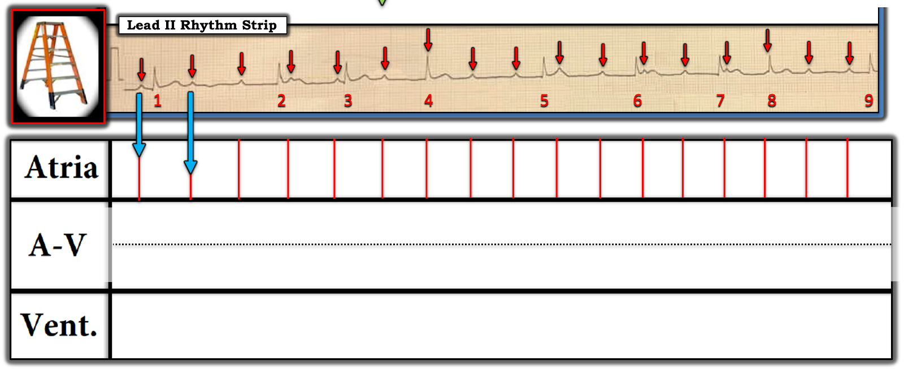
LƯU Ý: Vì tôi nghi ngờ blốc AV hai tầng trong nút AV — tôi chia Tầng Nút AV thành 2 phần bằng cách vẽ một đường nằm ngang màu ĐEN chấm chấm).

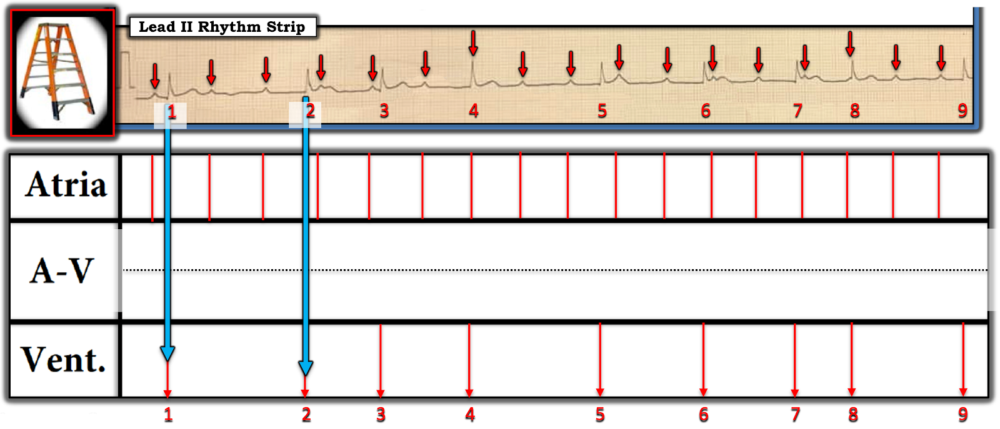
================================
LƯU Ý: "Phần DỄ" khi dựng phần lớn các giản đồ bậc thang gồm 2 BƯỚC đầu tiên này (được trình bày ở Hình 4 và Hình 5).
- Giờ thử thách mới bắt đầu! — với nhiệm vụ cố gắng tìm ra những sóng P nào ở Tầng Nhĩ đang được dẫn truyền xuống thất.
- ĐIỂM THEN CHỐT (PEARL) #5: Manh mối TỐT NHẤT cho thấy một sóng P đang dẫn truyền một phức bộ QRS xuống thất — là khi, trên nền một nhịp xoang (tức là, không có PAC hay PJC) — bạn thấy một phức bộ QRS rõ ràng xuất hiện sớm-hơn-dự-kiến. Khái niệm này được minh họa rõ nhất ở Hình 6.
================================

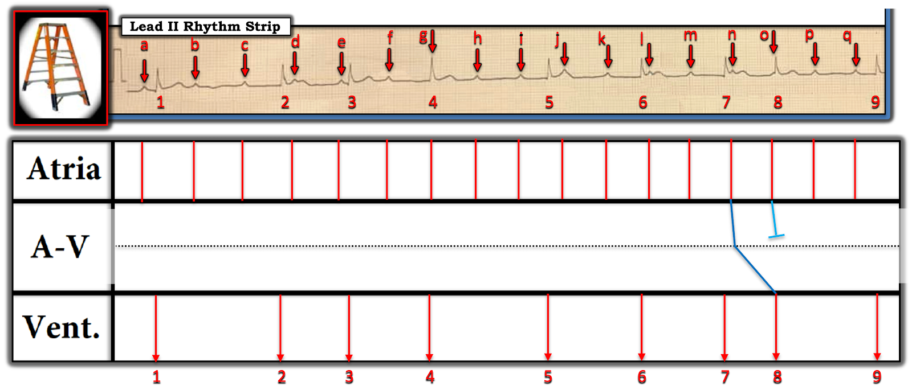
Sóng P "o", rơi ngay đầu nhát #8 — có khoảng PR quá ngắn để dẫn truyền (như tôi đã biểu diễn bằng đầu cụt XANH nhạt cho thấy xung này không được dẫn truyền).

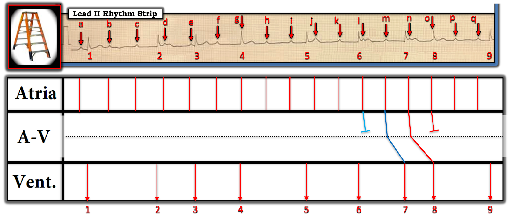
Vị trí của sóng P "l" (xuất hiện quá sớm sau phức bộ QRS trước đó) — dường như cực kỳ khó đang dẫn truyền nhát #7. Điều này càng đúng vì sóng P "m" có vẻ ở vị trí thuận lợi hơn nhiều để dẫn truyền nhát #7. Do đó tôi vẽ một đầu cụt XANH nhạt để chỉ sóng P "l" không được dẫn truyền — và các đường XANH đậm đi qua 2 tầng trong Tầng Nút AV để chỉ sự dẫn truyền của sóng P "m". Lưu ý độ dốc của đường ĐỎ trong Tầng Nút AV phía dưới lớn hơn độ dốc của đường XANH đậm — phù hợp với khoảng PR tăng dần cho đến khi sóng P "o" không được dẫn truyền. (Điều này tạo nên một chu kỳ dẫn truyền Wenckebach AV 3:2 trong Tầng Nút AV).

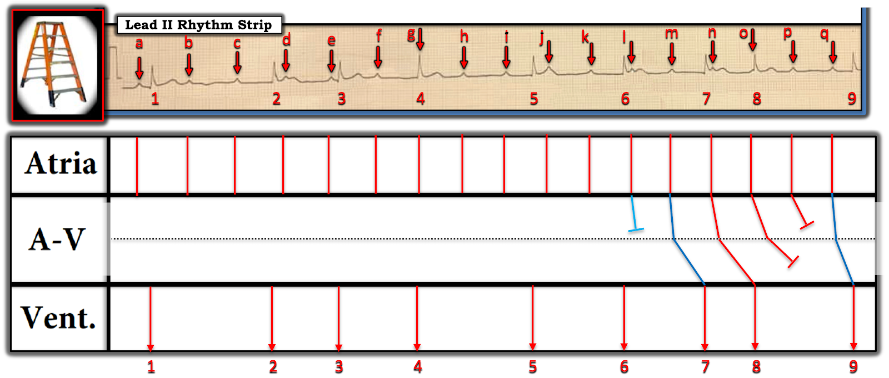

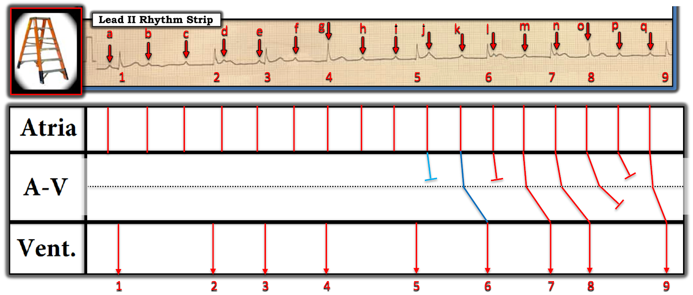

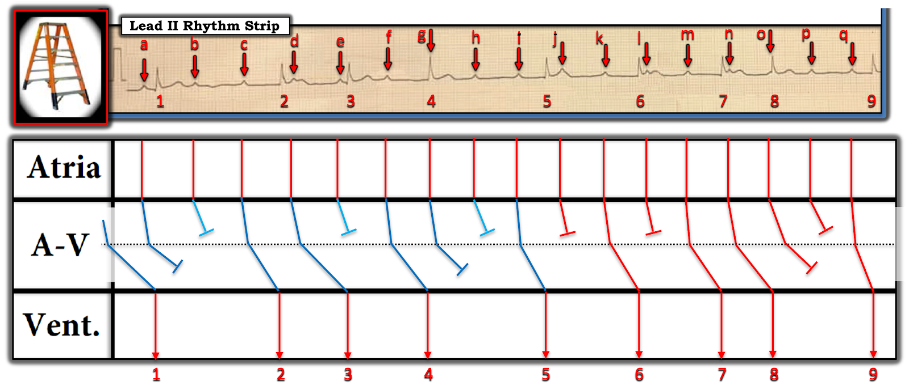
Sóng P "i" có vẻ ở vị trí hoàn hảo để dẫn truyền nhát #5 xuống thất (tương tự như cách sóng P "k" và "m" có vẻ ở vị trí thuận lợi để lần lượt dẫn truyền nhát #6 và nhát #7). NẾU giả định này đúng — thì các sóng P "g" và "h" không dẫn truyền phức bộ QRS nào xuống thất. Giống như trường hợp sóng P "o" và "p" — điều này tạo nên 2 sóng P không được dẫn truyền liên tiếp (đó là lý do tôi vẽ các đường XANH đầu cụt liên tiếp cho sóng P "g" và "h" ở mỗi tầng trong 2 tầng của Tầng Nút AV).
Lần ngược trở lại — tiếp theo tôi để ý thấy nhát #3 xuất hiện sớm-hơn-dự-kiến đến mức nào, điều mà theo ĐIỂM THEN CHỐT #5 — gợi ý mạnh rằng nhát #3 đang được dẫn truyền xuống thất. Nhưng khoảng PR từ sóng P "e" đến nhát #3 kế cận rõ ràng quá ngắn để dẫn truyền! Vì vậy, hẳn là sóng P "d" đang dẫn truyền nhát #3, dù với khoảng PR rất dài (giống như cách chúng ta đã suy ra sóng P "n" đang dẫn truyền nhát #8 với khoảng PR dài).
Còn lại các sóng P "b" và "c" — với "quy luật" dẫn truyền quan sát được cho đến lúc này, tôi thấy DỄ đặt giả thuyết rằng sóng P "c" ở vị trí thuận lợi hơn nhiều so với sóng P "b" để dẫn truyền phức bộ QRS kế cận của nó ( = nhát #2).
Cuối cùng — Còn sóng P "a" và nhát #1. Dù không thể biết chắc chắn (vì chúng ta không thấy điều gì xảy ra trước nhát #1) — tôi đã vẽ điều có vẻ là cách dẫn truyền hợp lý nhất cho phần đầu tiên này của nhịp hôm nay (Khoảng PR giữa sóng P "a" và nhát #1 rõ ràng có vẻ quá ngắn để dẫn truyền).

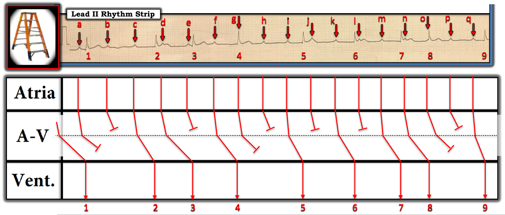
================================
BÌNH LUẬN CUỐI CÙNG:
Nhịp hôm nay quả thật khó đọc! Dù vậy — có những bài học quan trọng cần rút ra khi xem lại ca hôm nay.
- Việc xác định chính xác căn nguyên của rối loạn nhịp hôm nay là không cần thiết cho xử trí ban đầu tối ưu ở bệnh nhân hôm nay! Thay vào đó — Đánh giá Nhanh về nhịp của tôi (vốn không nên mất quá 10-20 giây để hoàn tất) là tất cả những gì cần cho xử trí ban đầu tối ưu ở bệnh nhân hôm nay.
- Phát hiện MẤU CHỐT trên điện tâm đồ hôm nay — là nhận ra ở bệnh nhân CP mới xuất hiện này rằng bản ghi ở Hình 2 cho phép chẩn đoán OMI dưới-sau cấp — và rằng cần thông tim sớm để PCI.
- Dù nhịp hôm nay cuối cùng là gì — "tin tốt" là nhịp chậm và mức độ blốc AV nhiều khả năng sẽ cải thiện ngay khi động mạch "thủ phạm" được tái tưới máu (Vì vậy cần thông tim sớm để PCI).
- Có khả năng vẽ giản đồ bậc thang cho rối loạn nhịp phức tạp hôm nay là không thiết yếu cho xử trí ban đầu tối ưu ở bệnh nhân hôm nay. Dù vậy — nên biết đến thực thể gọi là Wenckebach AV hai tầng như một dạng blốc AV độ 2 ít gặp hơn, nhưng dẫu sao vẫn quan trọng. Tôi hy vọng việc xem lại cách tiếp cận từng bước của tôi để giải rối loạn nhịp hôm nay sẽ giúp ích trong việc gợi ý khi nào nên nghi ngờ Wenckebach AV hai tầng.
- Học cách đọc giản đồ bậc thang đã được vẽ sẵn là DỄ. Hy vọng cách tiếp cận giản đồ bậc thang từng bước của tôi giúp bạn cảm nhận rõ hơn kiểu dẫn truyền Wenckebach đang xảy ra trong nhịp hôm nay, vốn nếu không thì không hiển nhiên.
- Cuối cùng — tôi xin nhấn mạnh rằng giản đồ bậc thang hoàn chỉnh của tôi ở Hình 11 không phải là lời giải khả dĩ duy nhất cho rối loạn nhịp hôm nay. Nhiều rối loạn nhịp phức tạp có thể có nhiều hơn một lời giải. Điều quan trọng — là giản đồ bậc thang của tôi là một lời giải khả dĩ — và rằng có một dạng blốc AV độ 2 nào đó với những giai đoạn dẫn truyền Wenckebach.
==========================================
Lời cảm ơn: Xin cảm ơn Adem Med Ahmed (đến từ Mauritania) và Ahmed Elbakery (đến từ Yemen) về ca bệnh và bản ghi này.
==========================================

==============================
Các bài ECG Blog liên quan đến Ca hôm nay:
- ECG Blog #205 — Ôn lại Cách tiếp cận hệ thống của tôi để đọc điện tâm đồ 12 chuyển đạo.
- ECG Blog #185 — Ôn lại Hệ thống của tôi để đọc nhịp, dùng cách tiếp cận Ps, Qs, 3R.
- ECG Blog #188 — Ôn lại cách đọc và vẽ giản đồ bậc thang (kèm ĐƯỜNG LINK tới hơn 100 ca có giản đồ bậc thang — nhiều ca có minh họa tuần tự từng bước).
- ECG Blog #192 — 3 Nguyên nhân gây phân ly nhĩ thất.
- ECG Blog #191 — Ôn lại sự khác biệt giữa phân ly nhĩ thất và blốc AV hoàn toàn.
- ECG Blog #389 — ECG Blog #373 — và ECG Blog #344 — để xem lại một số ca minh họa "giải quyết vấn đề blốc AV".
- ECG Blog #251 — Ôn lại các khái niệm tính chu kỳ Wenckebach và "Dấu chân" của Wenckebach.
- ECG Blog #164 — Ôn lại một ca blốc AV độ 2 Mobitz I điển hình (kèm bàn luận chi tiết về "Dấu chân" của Wenckebach).
- ECG Blog #63 — Blốc AV độ 2 Mobitz I kèm các nhát thoát bộ nối.
- ECG Blog #267 — Ôn lại, bằng giản đồ bậc thang từng bước, cách suy luận một ca Mobitz I có nhiều hơn một lời giải thích khả dĩ.
- ECG Blog #259 — Ôn lại giản đồ bậc thang từng bước ở một bệnh nhân blốc AV hai tầng.
- ECG Blog #243 — Ôn lại một ca cuồng nhĩ (AFlutter) với Wenckebach hai tầng ở đường ra khỏi nút AV.
- ECG Blog #226 — Phân tích một Ca bệnh phức tạp (gồm một ECG Video Pearl dài 11:00 phút, dẫn bạn đi từng bước trong việc dựng một giản đồ bậc thang có dẫn truyền Wenckebach và blốc hai tầng trong nút AV).
- ECG Blog #205 — Ôn lại Cách tiếp cận hệ thống của tôi để đọc điện tâm đồ 12 chuyển đạo.
- ECG Blog #218 — Ôn lại CÁCH xác định một sóng T là tối cấp?
- ECG Blog #193 — Ôn lại khái niệm vì sao thuật ngữ “OMI” ( = nhồi máu cơ tim do tắc — Occlusion-based MI) nên thay thế thuật ngữ quen thuộc hơn là STEMI — và — ôn lại những điều cơ bản về cách dự đoán động mạch "thủ phạm" .
- ECG Blog #351 — ôn lại chẩn đoán OMI thành sau cấp. Để xem ca minh họa này được trình bày dưới dạng ECG Video — Mời xem ECG Blog #406 (Để có Mục lục CÓ LINK của ECG Video này — Bấm vào MORE trong phần Mô tả bên dưới video trên YouTube).
- ECG Blog #405 — Bài trình bày dạng ECG Video ôn lại sự phân biệt giữa phân ly nhĩ thất và blốc AV hoàn toàn (độ 3) (Để có Mục lục CÓ LINK của ECG Video này — Bấm vào MORE trong phần Mô tả bên dưới video trên YouTube).

PHẦN BỔ SUNG (2/10/2024):

ECG Video (Media PEARL #52) dài 15 phút này — Ôn lại 3 Loại blốc AV độ 2 — cùng với — thuật ngữ khó định nghĩa là blốc AV "mức độ cao". Tôi bổ sung tài liệu này bằng 2 tài liệu phát tay PDF sau đây.

- Mục 2F (6 trang = Câu trả lời "ngắn") trong cuốn ECG-2014 Pocket Brain của tôi cung cấp phần ôn tập nhanh bằng văn bản về các blốc AV.
- Mục 20 (54 trang = Câu trả lời "dài") trong cuốn ACLS-2013-Arrhythmias bản Mở rộng của tôi cung cấp phần bàn luận chi tiết về các blốc AV LÀ GÌ — và chúng không phải là gì!

ECG Media PEARL #71 (5:45 phút Âm thanh) — Ôn lại hiện tượng Wenckebach Hai Tầng ở đường ra khỏi nút AV (CÁCH nhận biết hiện tượng này — và cách phân biệt nó với Mobitz II).
==============================
Tải PDF Miễn phí từ các Mục liên quan trong cuốn ECG-2014-ePub của tôi:
- Tệp PDF: Tổng quan về tuần hoàn vành và động mạch “thủ phạm” trong nhồi máu cơ tim cấp —
- Tệp PDF: Nhồi máu cơ tim thành sau và “nghiệm pháp soi gương (Mirror Test)” —


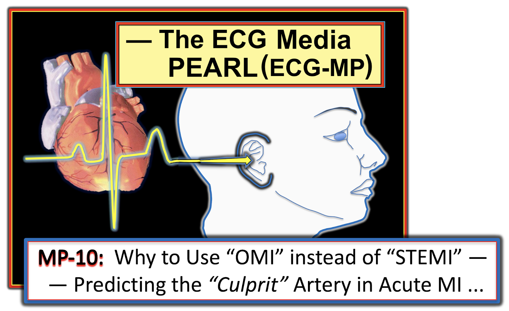
ECG Media PEARL #10 (10 phút Âm thanh) — ôn lại khái niệm vì sao thuật ngữ “OMI” ( = nhồi máu cơ tim do tắc — Occlusion-based MI) nên thay thế thuật ngữ quen thuộc hơn là STEMI — và — ôn lại những điều cơ bản về cách dự đoán động mạch "thủ phạm".